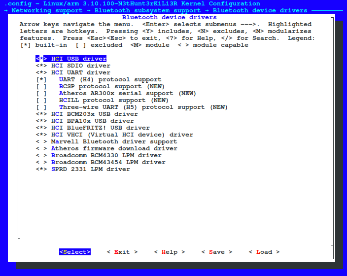

HCI "Protocol"
The HCI is a standardized Bluetooth interface for sending commands, receiving events, and for sending and receiving data. As the name implies, the HCI is used to bridge the Host and Controller devices!
99% of the Android devices will have this enabled by default but if your hci cannot be attached or something like that means that you need enable the hci UART interface to use your device chipset or hci drivers if you want use a usb bluetooth dongle on your OTG port.

You need enable all these options in the image above, these options can be found in: Networking support -> Bluetooth subsystem support -> Bluetooth device drivers